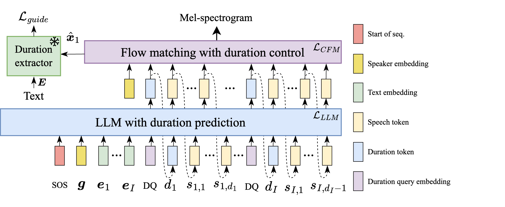
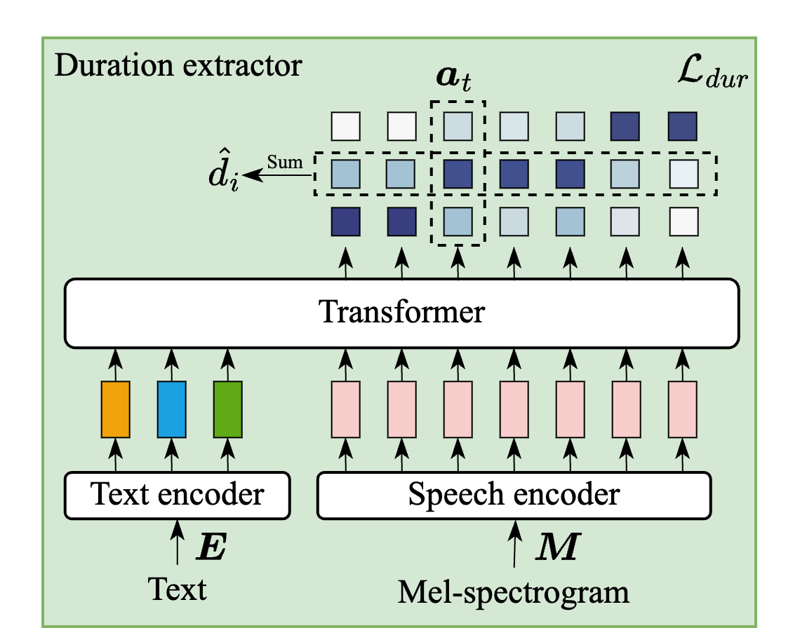

DuraMark: Duration-Embedded Watermarking in LLM-based TTS
- speech watermarking
- duration-embedded watermarking
- robustness
- duration-controllable TTS
Abstract
Large language model (LLM)-based text-to-speech (TTS) models have achieved remarkable voice cloning capabilities, raising concerns about potential deepfake misuse. Speech watermarking mitigates this by embedding traceable information into generated speech. Mainstream watermark methods operate at the signal level (waveform or spectrogram), rendering the watermark vulnerable to generative attack (e.g., neural codec and vocoder). To address this, we propose DuraMark, a robust information-level watermarking framework. It utilizes syllable duration editing to achieve watermark embedding. Specifically, DuraMark integrates a duration-controllable TTS model to edit syllable durations during synthesis, coupled with a duration extractor to extract these durations for detection. Experiments demonstrate DuraMark's superior robustness against generative attacks, significantly outperforming signal-level baselines.
Model Architecture


(a) Duration-controllable TTS


(b) Duration extractor
Results
Evaluation was performed on the Chinese AISHELL-3 test set. We compared DuraMark against three state-of-the-art signal-level baselines: AudioSeal, Timbre and WavMark.
AISHELL-3
| Text | Unwatermarked | AudioSeal | Timbre | WavMark | DuraMark |
|---|---|---|---|---|---|
但是他们会想方设法的，从我们口里面逼出证据。 |
|||||
那个激情酒吧，是个服食倒卖摇头丸的一个窝点。 |
|||||
原来大三元的下面就是霹雳堂啊，怪不得我穿红裤衩儿都会输钱。 |
|||||
此时手机响起，医生才知道妻女被绑架，唯有亚当死才能救家人。 |
|||||
昨天看到的洛爷挖的那座遍布鱼鳞的坟坑儿，就是八古转坟坑儿。 |
|||||
不能让他们再这样乱下去了，我想了想，抬手让大家先安静下来。 |